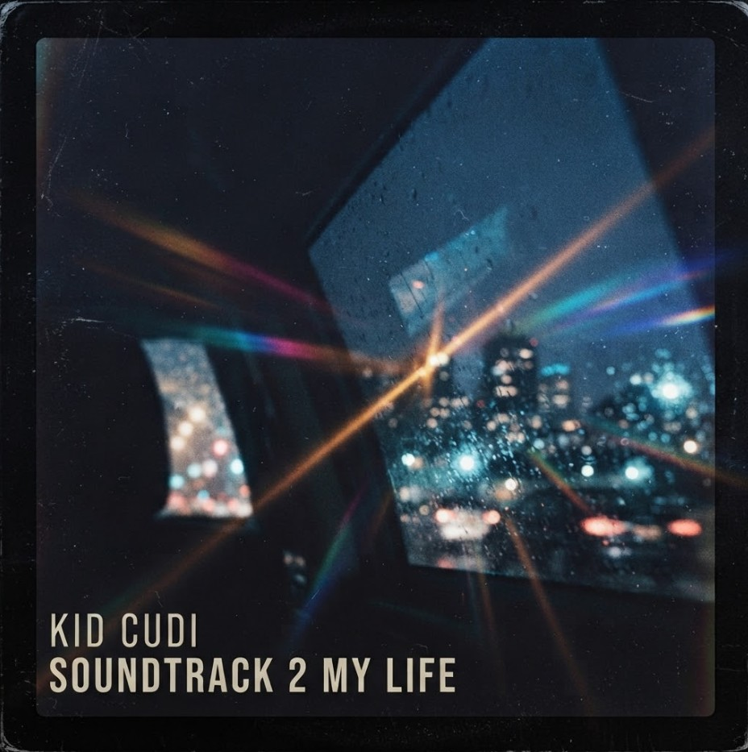

Album cover
A cover for Kid Cudi's Soundtrack 2 My Life, built around a rainy night ride. City lights blur through a wet window and light flares streak across the frame, so the cover feels like a late drive with headphones on.

A cover for Kid Cudi's Soundtrack 2 My Life, built around a rainy night ride. City lights blur through a wet window and light flares streak across the frame, so the cover feels like a late drive with headphones on.
